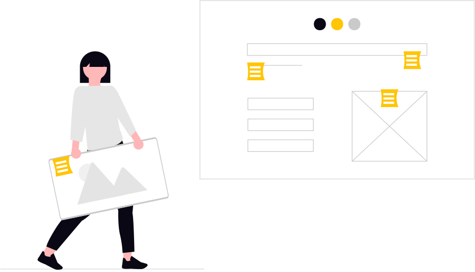
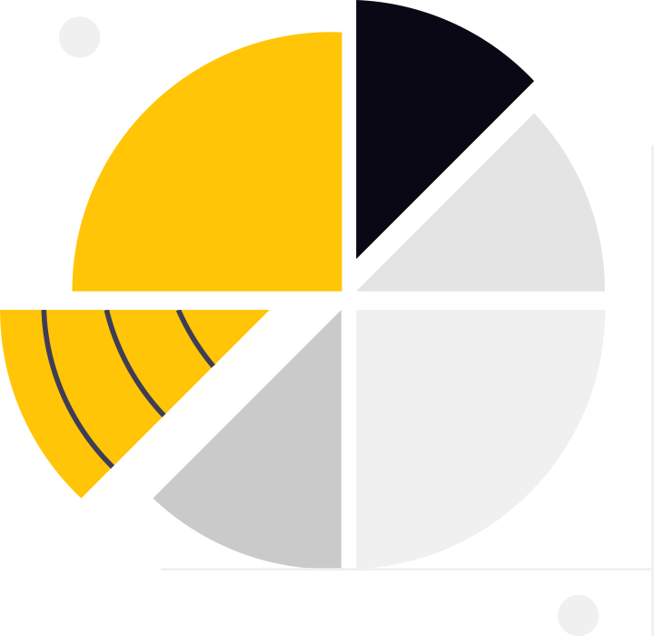

Fundz
O Fundz foi desenvolvido para proporcionar uma gestão simples e eficiente das suas atividades universitárias. Organize suas finanças, notas e momentos de diversão de maneira prática. Contribua com suas ideias e sugestões para tornar a plataforma ainda mais útil para todos.
Evolução financeira
Gastos por categoria
Resumo semanal
| Dia | Gasto | Saldo |
|---|---|---|
| Segunda | R$ 32,50 | R$ 217,50 |
| Terça | R$ 15,00 | R$ 202,50 |
| Quarta | R$ 0,00 | R$ 202,50 |
Desbloqueie o potencial do Fundz com um simples cadastro
Conte-nos suas preferências, e nós vamos te ajudar a otimizar sua vida universitária.
Com tudo configurado, é hora de explorar e tirar o máximo proveito!
Simples, Rápido e prático